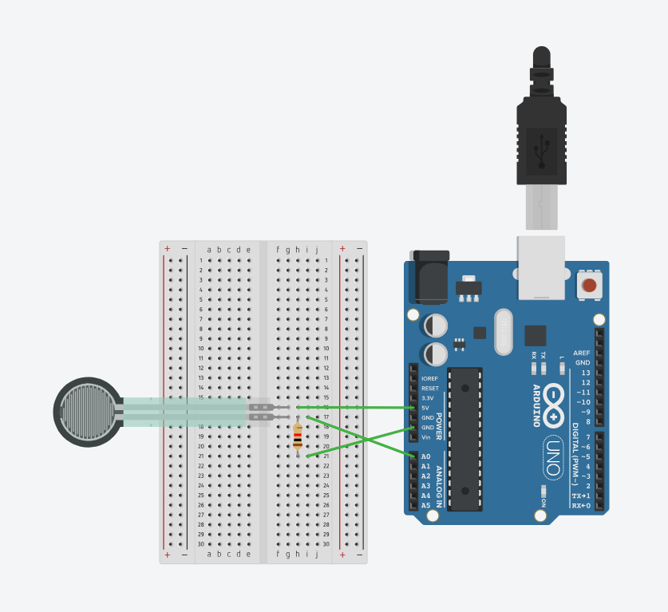

03 processing & arduino
3-1 Using Procssing to control Arduino
3-2 Using Arduino to control Processing
03 processing & arduino
3-1 Using Procssing to control Arduino
3-2 Using Arduino to control Processing
03 processing & arduino
3-1 Using Procssing to control Arduino
Project introduction
Continuous item:Pressure controls the size of the circle
Detail introduction:In processing, a circle with black background and white lines is drawn first, and connected to the FSR pressure
sensor through the ardunio program, and pressure is applied to compress the circle.
Code
Arduino code
//2024.5.25 by Han Chenyue
int val=0;//An integer variable val, initialized to 0. This variable is used to store the analog value read from analog input pin A0.
void setup(){
Serial.begin(9600);//Initializes serial communication, setting the communication baud rate to 9600 baud per second.
}
void loop(){//The function is used to send data over a serial port.
val=analogRead(A0);
Serial.write(val/4);
delay(100);//Pause program execution for 100 milliseconds (0.1 seconds). This is done to control the rate at which the loop executes and to avoid sending data too quickly.
}
Processing code
//2024.5.25 by Han Chenyue
import processing.serial.*;
Serial port;
float val;
void setup(){
size(600,600);
String myPort = Serial.list()[0];//Gets the first serial port in the list of available serial ports on your computer.
port=new Serial(this,myPort,9600);//Initializes serial communication, connecting Processing applications to the selected serial port at a baud rate of 9600 baud per second
background(255);
}
void draw(){
background(0);
if(port.available()>0){//Check whether data is available on the serial port
val = port. read();//If the serial port has data available, use the port.read() function to read a byte and store it in the val variable.
strokeWeight(5);
noFill();
stroke(255);
val=int(map(val,0,255,0,400));//Use the map() function to map the value of val from the range 0 to 255 to the range 0 to 400, and convert the result to an integer.
This is to convert the received data into a suitable range of angles in order to draw semi-arcs.
println(val);
}
arc(300,300,400,val,0,PI);//Draw a semi-arc, located in the center of the drawing window (300, 300), with a radius of 400 pixels, starting at an Angle of 0 and
ending at an Angle of PI (180 degrees), the size of which is controlled by the val variable.
}
Circuit diagram
Physical connection mode

Effect display

3-2 Using Arduino to control Processing
Project introduction
continuous item:The mouse in the rectangle position to change the led light light.
Detail introduction:Draw a rectangle on the Processing interface. When you click inside the rectangle with the mouse, the LED light on
the Arduino board lights up; when you click outside the rectangle, the LED light on the Arduino board lights off.
Code
Arduino code
//2024.5.25 by Han Chenyue
int c =0;
void setup()//Functions are part of an Arduino program and are executed only once when the program starts running.
{
Serial.begin(9600); //Initializes serial communication and sets the communication rate to 9600 bits per second
pinMode(13,OUTPUT); //Set digital pin 13 to output mode to control the devices connected to that pin.
digitalWrite(13,LOW);//Setting the status of digital pin 13 to low (0V) will ensure that the LED is off at the beginning of the program.
}
void loop()
{
if(Serial.available())//Check whether data is available in the serial buffer. If there is data available in the serial buffer, proceed with the following code.
{
c=Serial.read();//Read a byte of data from the serial port and store it in variable c.
if(c==97) //Check that the byte read is equal to the ASCII 97 character, that is, the letter 'a'.If yes, execute
digitalWrite(13,HIGH); //Set the status of digital pin 13 to high (5V), which will light up the LED connected to that pin.
else
if(c==98) //Check that the byte read is equal to the ASCII character of 98, that is, the letter 'b'.If yes, execute
digitalWrite(13,LOW);//Set the status of digital pin 13 to low (0V), which will turn off the LED connected to that pin.
}
}
Processing code
//2024.5.25 by Han Chenyue
import processing.serial.*;//This line of code imports Processing's serial port library to communicate with the serial port.
Serial port;//This line of code declares a global Serial object called port, which handles communication with the serial port
void setup()
{
port =new Serial(this,"COM4",9600);//Initializes serial communication, specifying the serial port number to connect to ("COM4"), and the baud rate of communication (9600).
size(400,400);
}
void draw()
{
background(125);
fill(255);
rect(100,100,50,50);
}
//Check that the mouse click position is within the specified rectangle.
If the click position is inside a rectangle, send the character "a" to the serial port to indicate that the LED should be ON and print "LED turn ON!" .
If the click position is not inside the rectangle, send the character "b" to the serial port to indicate that the LED should be OFF and print "LED turn OFF!" .
void mouseClicked()
{
if((mouseX>=100)&(mouseX<；=150)&(mouseY>=100&mouseY<；=150))
{
println("LED turn ON!");
port.write("a");
}
else
{
println("LED trun OFF!");
port.write("b");
}
}
Circuit diagram

Physical connection mode

Effect display